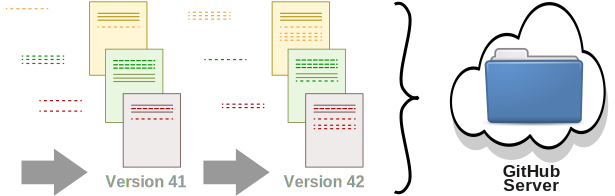
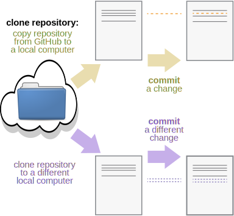
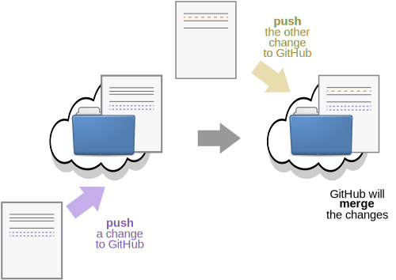

Git(Hub)
Attribution
This module is based on the “Version control with Git” lesson developed by The Carpentries under CC BY-SA 4.0: modifications were made to explain how Git is used with GitHub Desktop.
I strongly recommend walking yourself through their lesson if you want to learn more about Git.
Learning Goals
What is Git & how can I track my changes locally?
What is GitHub & how can I track my changes remotely?
How are Git & GitHub related to the reproducibility practices we learned about in the first half?
Version control
Keeping track of the changes made to a document can go like:

Programs can automatically track the changes made to a document (e.g., Google docs):

What is Git?

Git tracks the changes made to all files and subfolders contained in a specific parent folder, called the repository.
For text files, Git lets you see line-by-line changes:

For non-text files, Git indicates that files were
changed:

Git can be used locally on your computer
AND
Git can be synchronized with a server so that data & changes are backed up to the cloud.

Using Git Locally
Git can be run via command line (see tutorial here) but we will use GitHub Desktop.
Exercise 1. Stash
Download and install GitHub Desktop at this link: https://github.com/apps/desktop
To complete the installation, you will also have to create an account on GitHub.com. Your username will be public.
After you make your GitHub account, authenticate GitHub Desktop by going to
File ➜ Options… ➜ Accounts ➜ Sign Into GitHub.com


- Download this GitHub repository to your local computer: EvoNerd/THEE_2025reproducibility
Add ➜ Clone repository… ➜ URL


Open the “THEE_2025reproducibility” folder locally on your computer (i.e., using File Explorer for Windows, or Finder for Mac).
GitHub Desktop will probably save the repository to a folder in your Documents that is called “GitHub”.
You can also navigate to the repository from the start page on GitHub Desktop

Copy the R Notebook file you created before the break to the new repository.
- Do you see any changes on GitHub Desktop?

GitHub Desktop automatically detects all changes in a repository and adds them to the staging area.
When you decide that you have completed a stash of work, then you commit the stash to the repository with a message.

The Git repository contains a time-series of commits. This time-series is called a branch.
A repository can have more than one branch, but this makes it more
difficult to manage. By convention the main branch of a repository is
called main.
Exercise 2. Commit
Navigate to the GitHub Desktop staging area and commit the R Notebook file you copy/pasted to the repository.
- GitHub Desktop may prompt you to push to origin or to create a fork – do NOT do either of those things at this time!

- Rename the R Notebook file with your firstname and commit this change too.

- Navigate to the history tab. Can you figure out how to tag the most recent commit?

Some commits are especially important (e.g., the last time your code worked properly, the version of your results that you presented for the final presentation, etc.)
Tags let you label these important commits.
It’s easier to find and return to a tagged commit.
Exercise 3. Revert
- Tag your most recent commit as
<your firstname's> code.

Open your R Notebook file, delete all of its contents, and save the file. Don’t worry! Git will be able to retrieve it for you!
Commit the change.

Navigate to the history tab. Can you figure out how to revert the changes made by the most recent commit?
- What happens when you revert changes in commit?


GitHub: Using Git with a Server
Google Docs lets us work collaboratively on the same document – and so does Git!
GitHub pairs the functionality of Git with a remote server, so we can work collaboratively on the files in a repository.

By considering each change (commit) to a repository as separate, Git can keep track of different versions of the same repository even when they happen on different local computers.
Then, the different versions can be merged back together.

Uploading your local commits and merging them to the server is called pushing.

Downloading the most recent commits from the server and merging them locally is called pulling.
You can also just fetch: ask Git to check if there are any new commits on the server. This will neither upload or download any changes from/to your local computer.
Exercise 4. Push & Pull
- Send Hermina your GitHub username or email. You should soon receive an email invite to collaborate on the repository.


- Push your local changes to GitHub’s server by clicking “Push to Origin”.

- If you try to push but GitHub finds that your local computer does not have the latest commits, it will automatically ask you to pull so your local computer is up-to-date.


Keep trying to push until you have successfully synchronized your R Notebook file with origin.
Keep trying to fetch and pull until you have have downloaded all the R Notebook files of the whole class to your local computer.
Check out how many tags we have now on the repository! You can easily find tagged commits via the GitHub website.

For text documents, Git keeps track of changes based on the name and line number of a document.
If different commits modify the same line of the same document, Git does not know how to merge. This creates a conflict.

Git(Hub) will try its best to automatically resolve conflicts for you. When it finds a conflict that it cannot figure out how you it should be resolved, it will ask you to resolve it manually.
Committing your changes often and synchronizing them with the server reduces the likelihood of creating conflicts.
Bonus Exercise Merging Conflicts
Make a change to the R Notebook file called
reproducibility.Rmd. Commit the change and push it to GitHub.- Did this create a conflict or was Git able to merge it successfully?

Keep making changes, committing, and pushing them until we create a conflict. Let’s practice together to merge the conflicts.
Conflicts can be resolved by telling Git to use all the changes from one commit and drop all the changes from the other commit
e.g., we can keep either the commit from local main or that from GitHub (origin/main)

- If we want to keep some parts from both of the conflicting commits, we need to open the document in a code or text editor and manually resolve the conflict. Here’s what a conflict looks like in Visual Studio Code. It is resolved manually simply by clicking on the change you want to accept.

Conflicts are scary but we can easily manage them once we learn how 😌
- How can you avoid conflicts?

Ignoring files
Some files are not useful to track but prone to creating conflicts:
e.g., Files automatically created by your operating system, like
.DS_Store,Thumbs.db,.Trashe.g.,
.RHistoryfiles (except for advanced R users)
You can ignore these file types by going to GitHub Desktop:
Repository ➜ Repository Settings… ➜ Ignored files and
typing in a list of the files or filetypes you want to Git to
ignore.
(… and if that doesn’t work, check out this
tutorial: link here.)
Summary
Automated version control is useful.
You will have to use GitHub during the research practical
(other options exist. Servers: GitLab. Programs: mercurial, CVS, Subversion.)
Git can be used locally for version control.
Git can be used with an online server (e.g., GitHub)
we experimented with how GitHub helps backups & collaboration
GitHub can also be used to host & distribute projects
e.g., this website is hosted on GitHub on the branch called “website”
- Coupling Git with an online server makes reproducibility easy:
- How does GitHub help us with the other reproducibility principles?